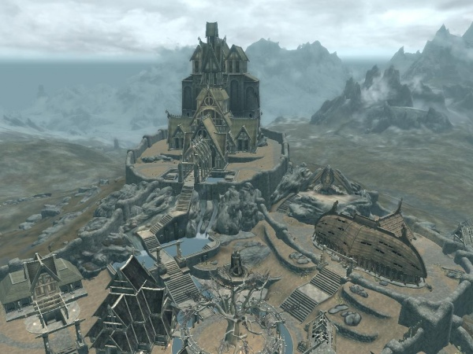

Balgruuf el Grande es el jarl de Carrera Blanca en el 201 CE, y descendiente directo del rey Olaf Ojo Único. Admiraba a los Barbas Grises y viajó hasta Alto Hrothgar en su juventud, pero no pudo aprender a utilizar el Thu'um. Desde su juventud ha habido rivalidad entre Balgruuf y Ulfric Capa de la Tormenta. Ha tenido varios hijos, incluyendo a Frothar, Dagny y Nelkir. Pese a ser considerado un guerrero honorable que pone el corazón y el alma en la batalla, también es un hombre paciente. Tras el Concordato Blanco y Dorado supuestamente recibió varios cofres de oro para que aceptara los términos. Sin embargo, siguió adorando a Talos en secreto.
Durante la rebelión de los capas de la tormenta, una capilla a Talos permanecía en el distrito del viento de Carrera Blanca y los ciudadanos podían predicar en su nombre sin ninguna repercusión. Tanto los Capas de la Tormenta como la Legión Imperial trataron de forjar una alianza con Balgruuf, ya que Carrera Blanca es próspera, influyente y está estratégicamente situada. Se negó a permitir que la Legión guarnicionara sus tropas en la ciudad y no quiso reconocer a Ulfric como rey supremo. Cuando el Último Sangre de Dragón llegó hasta él tras el ataque a Helgen, el jarl Balgruuf envió tropas a Cauce Boscoso, mandó al héroe hacia Alto Hrothgar a ver a los Barbas Grises y dedicó tiempo y recursos a tratar la amenaza de los dragones.
HISTORIA DE SKYRIM
CARRERA BLANCA

Carrera blanca
La ciudad es hogar de dos importantes dinastías familiares: los Melena Gris (que apoyan a los Capas de la Tormenta) y los Batallador (que apoyan al Imperio). Aunque en principio tienen buenos términos y son amistosos los unos con los otros, son en realidad enemigos, como resultado de sus distintos puntos de vista en el conflicto de la Guerra Civil. Al entrar en la ciudad, el jugador podrá elegir un bando de los dos.
Carrera Blanca es también la sede de Los Compañeros, una facción similar al Gremio de Luchadores de Cyrodiil. Su cuartel general se sitúa en Jorrvaskr, el legendario Salón de Aguamiel que fue construido cerca de la Forja del Cielo, una antigua forja que se dice es más antigua que los hombres y los elfos. La ciudad fue asimismo construida a lo largo de Jorrvaskr, usada para atraer guerreros de todo Tamriel. Debido a la reputación de los Compañeros de ser glorificados vendedores de espadas, Jorrvaskr ya no tiene tanta estima como antes.
El jarl Balgruuf el Grande es el jarl de Carrera Blanca, siéndolo Vignar Melena Gris si los Capas de la Tormenta toman la ciudad. Balgruuf realizará un papel importante en la historia, incluso habiendo completado las misiones, ya que el jugador podrá comprar una casa a su administrador, Provencio Avenicci, el Hogar de la brisa, por 5000 septims.
También el jarl Balgruuf el Grande apoya la ideología del Imperio aunque no toma partido hasta que dice preferir el contacto económico y la seguridad del Imperio a Ulfric.
SANGRE DE DRAGONCarrera blanca
Un Sangre de Dragón es en apariencia una persona normal, pero con unos poderes especiales otorgados por su don especial de ser descendiente de los dragones:
En el universo de The Elder Scrolls, el término "Sangre de Dragón" se ha utilizado frecuentemente para hacer referencia a los herederos del emperador Tiber Septim, fundador de la Dinastía Septim de Tamriel. En The Elder Scrolls IV: Oblivion, por ejemplo, cuando el jugador lleva a Martin Septim al Templo del Soberano de las Nubes por primera vez, los Cuchillas lo vitorean como Sangre de Dragón (Dragonborn en inglés, "Nacido del dragón" en castellano). Otras líneas sanguíneas de Sangres de Dragón han obtenido su legitimidad del pacto entre Santa Alessia y Akatosh, así como de la línea de Reman Cyrodiil.
El Último Sangre de Dragón es el personaje del jugador en The Elder Scrolls V: Skyrim, y se ha declarado que es diferente a los "Sangre de Dragón" de los juegos anteriores por el desarrollador y productor ejecutivo de Bethesda Softworks, Todd Howard. Al principio del juego, el Sangre de Dragón es un prisionero, capturado al intentar cruzar de forma ilegal la frontera a Skyrim. Mientras es transportado al asentamiento de Helgen, el Sangre de Dragón descubre que Ulfric Capa de la Tormenta, el líder de los rebeldes Capas de la Tormenta, es otro prisionero junto a él. En Helgen, el General Tulio de la Legión Imperial, sentencia a todos los prisioneros a muerte, pero un dragón ataca justo antes de que el protagonista sea ejecutado, proporcionándole una oportunidad para escapar.